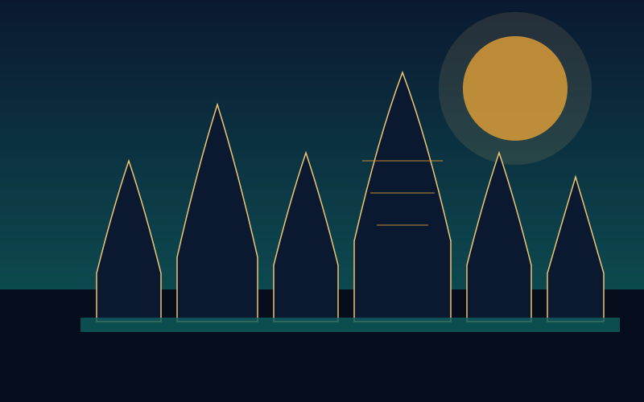
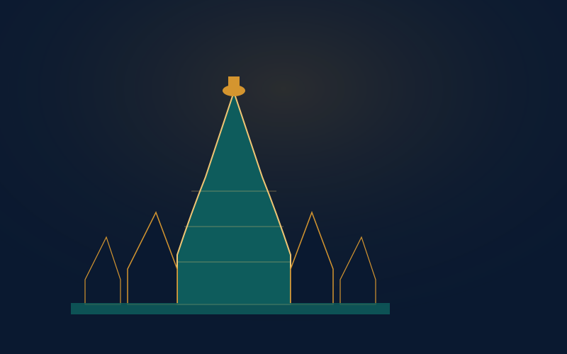
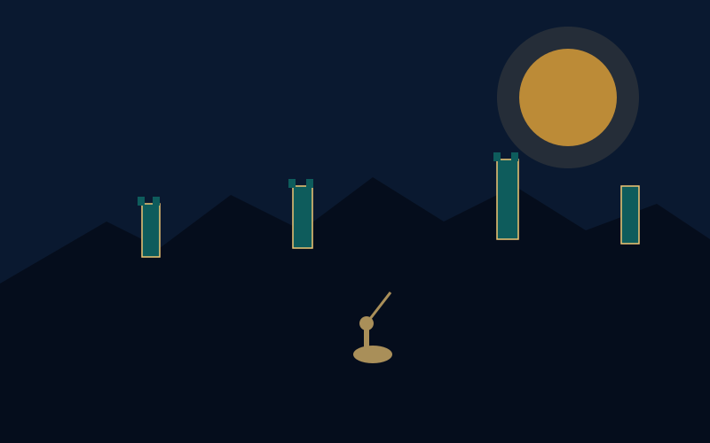
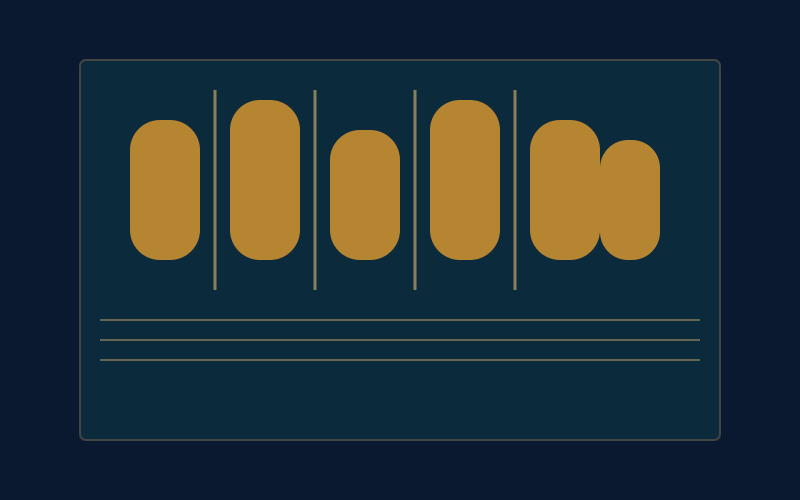

Chandela Dynasty Explorer
Step into the world of the Chandelas of Jejakabhukti, the Rajput dynasty whose royal ambition, temple-building, and defiance of invaders left behind the UNESCO-listed Khajuraho Group of Monuments.
A Rajput Dynasty of Central India
The Chandelas ruled the region of Jejakabhukti — roughly today's Bundelkhand, spanning parts of Madhya Pradesh and Uttar Pradesh — from the early 9th century until the early 13th century CE. According to their own inscriptions, the dynasty traced its mythical origin to the union of Hemavati, a royal priest's daughter, and the moon god, which is why the Chandelas are remembered as a Chandravanshi (moon-descended) clan.
The historically attested founder of the dynasty was Nannuka, who established Chandela authority in the region around the early-to-mid 9th century CE as a feudatory of the powerful Gurjara-Pratihara empire of Kannauj. Over the following generations, rulers such as Vakpati and the brothers Jayashakti and Vijayashakti consolidated Chandela territory — it was Jayashakti, also known as Jejaka, who gave the region its name, Jejakabhukti.
📜 At a Glance
- Region: Jejakabhukti (Bundelkhand), present-day Madhya Pradesh and Uttar Pradesh.
- Founder: Nannuka, c. early-mid 9th century CE.
- Capitals: Khajuraho, later Kalinjar and Mahoba.
- Known for: The Khajuraho Group of Monuments, a UNESCO World Heritage Site.
Major Rulers of the Chandela Dynasty
Across four centuries, a handful of Chandela kings transformed a minor Pratihara feudatory into a sovereign power that briefly checked one of the era's most formidable invaders.
Yashovarman (c. 925–950 CE)
Also known as Lakshavarman, he was the first Chandela ruler to act as a practically independent king, though he still formally acknowledged Pratihara overlordship. His capture of the hill fortress of Kalinjar was a major military achievement, and he began construction of the Lakshmana Temple at Khajuraho.
Dhanga (c. 950–999 CE)
Yashovarman's successor was the first Chandela king whose inscriptions drop any mention of Pratihara suzerainty, marking full Chandela sovereignty. Dhanga commissioned the Vishvanatha Temple and extended Chandela influence toward Gwalior and Varanasi during his long reign.
Vidyadhara (c. 1003–1035 CE)
The dynasty reached its military and architectural peak under Vidyadhara, who twice resisted invasions by Mahmud of Ghazni and is credited with commissioning the Kandariya Mahadeva Temple, the largest and most ornate of the Khajuraho shrines.
🛕 The Khajuraho Group of Monuments
- Style: Nagara-style Hindu and Jain temple architecture, built largely between the 10th and 12th centuries CE.
- Scale: An estimated 85 temples once stood at Khajuraho; around 25 survive today.
- Recognition: Inscribed as a UNESCO World Heritage Site for its exceptional sculptural artistry.
Temple Architecture at Khajuraho
The Chandelas built their temples in the Nagara style characteristic of northern India, with soaring curvilinear towers, or shikharas, rising in tiers above the sanctum. Successive kings each added their own monuments: the Chausath Yogini Temple is thought to be the earliest survivor, while the Lakshmana, Vishvanatha and Parshvanatha temples mark the reigns of Yashovarman and Dhanga.
The complex reached its architectural high point in the Kandariya Mahadeva Temple, commissioned under Vidyadhara, whose walls are covered in an extraordinary density of carved figures — deities, celestial dancers, musicians and scenes of daily and courtly life — that together make Khajuraho one of the most studied bodies of medieval Indian sculpture.
Decline of the Chandela Power
Chandela strength waxed and waned across the 11th and 12th centuries as neighbouring powers and northern invaders tested their frontiers.
Regional Rivals
The Chandelas fought repeated wars with the Paramaras of Malwa and the Kalachuris of Tripuri, contests that shaped the borders of Jejakabhukti for generations.
Ghaznavid Raids
From the 11th century, the Chandela kingdom faced incursions by the Ghaznavid rulers of Afghanistan; Vidyadhara's stand against Mahmud of Ghazni became one of the dynasty's most celebrated episodes.
Fall to the Ghurids
By the turn of the 13th century, pressure from the Chahamanas and then the Ghurid Sultanate proved decisive, and effective Chandela rule over Jejakabhukti came to an end in the early 1200s.
Chronology of the Chandela Dynasty
Tracing the Chandelas from a minor Pratihara feudatory to the builders of Khajuraho, and their eventual decline before the Ghurid advance.
Nannuka Founds the Dynasty
Nannuka establishes Chandela authority over Jejakabhukti as a feudatory of the Gurjara-Pratihara empire of Kannauj.
Jayashakti and the Naming of Jejakabhukti
Rulers such as Vakpati and the brothers Jayashakti and Vijayashakti consolidate Chandela territory; the region takes its name from Jayashakti, also called Jejaka.
Yashovarman's Independence
Yashovarman becomes practically independent, captures the fortress of Kalinjar, and begins the Lakshmana Temple at Khajuraho.
Dhanga Achieves Sovereignty
Dhanga's inscriptions drop all reference to Pratihara overlordship, and he commissions the Vishvanatha Temple.
Vidyadhara and the Ghaznavid Threat
Vidyadhara resists incursions by Mahmud of Ghazni and commissions the Kandariya Mahadeva Temple, the dynasty's architectural masterpiece.
Wars with Neighbouring Powers
The Chandelas fight prolonged conflicts with the Paramaras of Malwa and the Kalachuris of Tripuri, and shift their political centre toward Kalinjar and Mahoba.
Decline Under Chahamana and Ghurid Pressure
Repeated conflict with the Chahamanas and the advancing Ghurid Sultanate brings an end to effective Chandela rule over Jejakabhukti.
The Temples, Fort & Art of the Chandelas
Illustrated impressions of the Khajuraho skyline, its most celebrated temple, the Chandela stronghold of Kalinjar, and the dynasty's carved stone artistry.




📚 References & Further Reading
- Mitra, Sisir Kumar (1977). The Early Rulers of Khajuraho. Motilal Banarsidass.
- Dikshit, Rao Bahadur Kashi Nath (1998). The Chandellas of Jejakabhukti. Bharatiya Publishing House.
- Desai, Devangana (1996). The Religious Imagery of Khajuraho. Franco-Indian Research.
- Archaeological Survey of India. Khajuraho Group of Monuments — World Heritage Nomination Dossier.
- UNESCO World Heritage Centre. Khajuraho Group of Monuments.